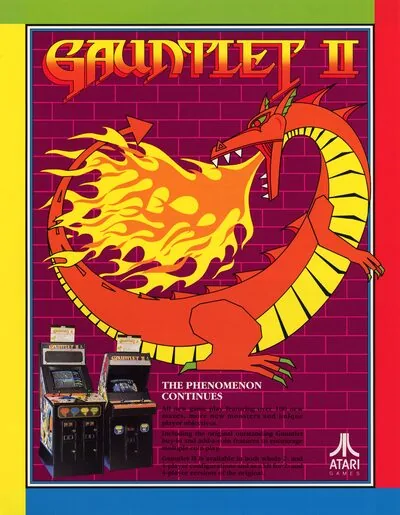

FBA (FinalBurn Alpha)
Gauntlet II
- Año: 1986
- Desarrollador: Atari Games
- Género: Laberinto / Disparos
- Jugadores: 4 jugadores
Gauntlet II es la secuela directa del legendario shoot 'em up de laberintos y fantasía lanzado un año antes. Atari decidió no tocar mucho la mecánica básica y se centró en mejorar la ya excelente acción multijugador que tanto revuelo causó con el original.
Como en la primera parte, hasta cuatro jugadores encarnan a «Thor el guerrero», «Thyra la valquiria», «Merlín el mago» o «Questor el elfo», y deben cooperar mientras exploran laberintos llenos de enemigos, recogiendo pociones, comida y tesoros en busca de la salida a la siguiente mazmorra.
Entre los cambios, ahora cada jugador puede elegir el personaje que quiera, aunque otro ya lo esté usando. Los personajes se distinguen por colores, así que uno puede acabar siendo el «elfo azul», el «mago verde», etc. Se añadieron nuevas voces para estos nombres.
Otros cambios: si se recoge la poción adecuada, los disparos rebotan en las paredes («disparos reflectantes»). Además de pociones nuevas, Gauntlet II trae varios monstruos nuevos. El más famoso es el dragón que escupe fuego y guarda la salida de algunas mazmorras: necesita muchos golpes para morir y, al derrotarlo, los jugadores reciben una poción permanente y una bolsa de tesoro.
Otra novedad destacada es el monstruo «It» (el que «la lleva»): si toca a un jugador, todos los monstruos del nivel persiguen SOLO a ese jugador e ignoran por completo a los demás. La única forma de quitarse la maldición es tocar a otro jugador para pasársela.
También se añadieron nuevos elementos de nivel para dar más variedad: mazmorras con paredes totalmente invisibles, paredes mágicas (que se convierten en monstruos u objetos al golpearlas), baldosas aturdidoras (que aturden a quien las pisa) y salidas que se encienden y apagan.
Controles
Que el jugador 2 entre con el botón 2P (antes entraba con el flipper derecho).
Dos botones. No hay botón de empezar: cada jugador entra echando su moneda.
| Panel | Juego |
|---|---|
 | Disparar |
 | Magia |
 | Moneda y entrar (jugador 1) |
 | Moneda y entrar (jugador 2) |
+  | Salir del juego |
El panel en FBA (FinalBurn Alpha)

Longplay

Partida completa de la recreativa (57 min), de Media Pool: Gauntlet 2 (Arcade) Playthrough Longplay Retro game.